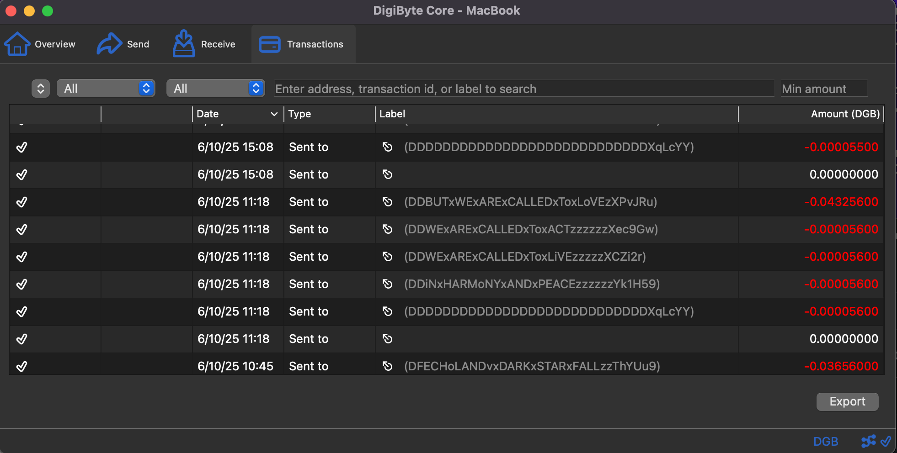
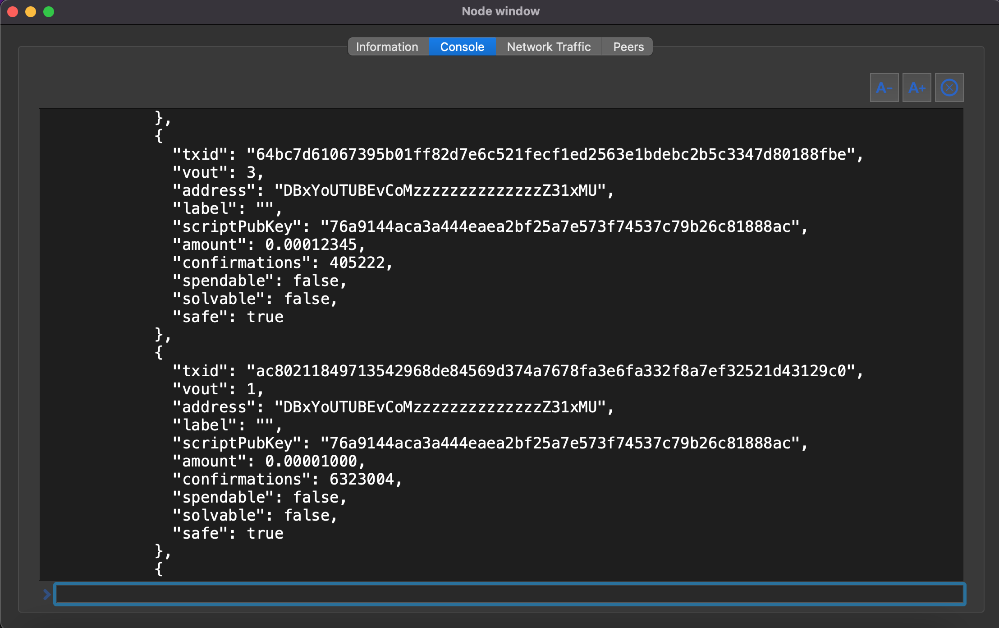
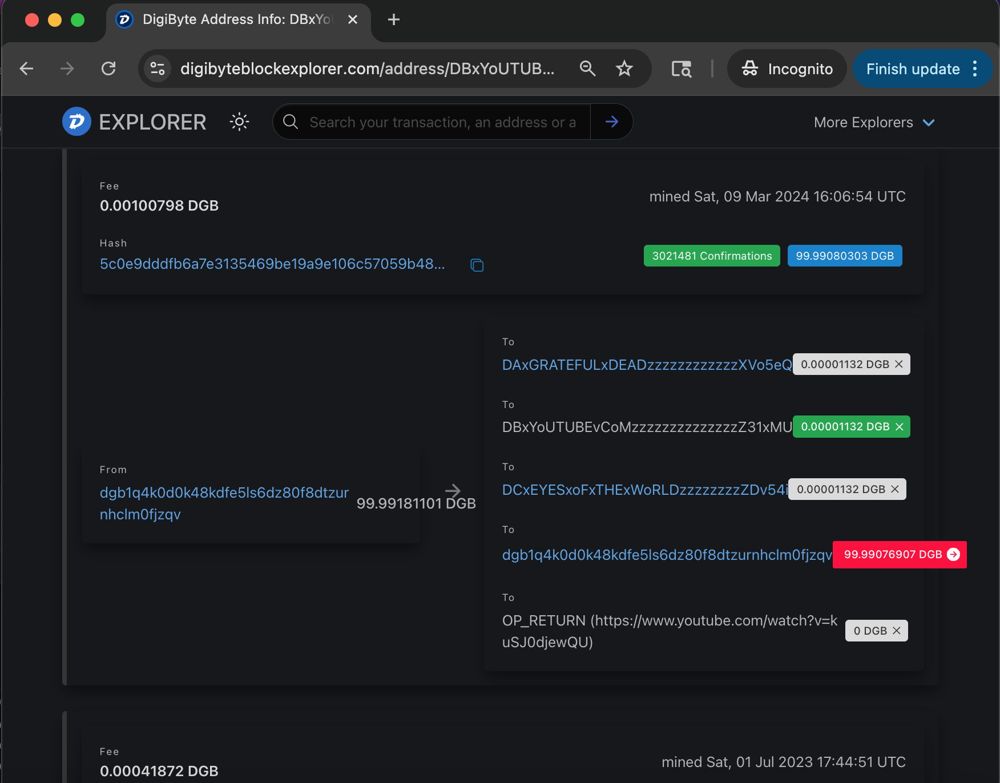
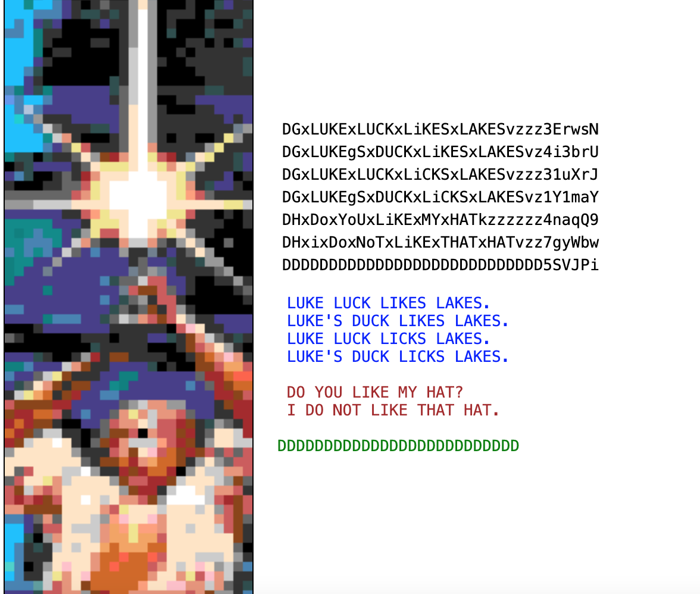

Abstract
Today’s social platforms are centralized ad markets with editorial power. They must operate this way in order to offer the free and convenient services that we have grown accustomed to. But these are technology traps that we can avoid. We no longer need to relying on centralized corporations that gate identity, throttle reach, and monetize surveillance. If you want a different outcome, you must change the substrate: put identity and data under their own programatic and decentralized control, store content on decentralized media, and make the “feed” a local program—not a centralized service.
Since Bitcoin solved the Byzantine Generals problem with proof-of-work, we have had a possible alternative digital medium which we could manage ourselves. Crypto ledgers are not just arbitrary money systems, they are also arbitrary data and communication systems. Large well-funded efforts in decentralization or Web3 generally fail because they introduce points of centralization which seem necessary. They either do this because of a failure of imagination or a lack of true vision and sincerity.
We believe in the spirit of the common person. We believe in the power of collaboration. We believe in true competition, true free enterprise, and the uncensored wisdom of exceptional individual over the madness of crowds or the pessimism of oligarchy. The Hobbesian Leviathan is born of fear, emits fear, and stifles innovation. This new "Digital Leviathan" posits that no single person has moral authority over any other. By creating a medium of communication based on individuals burning tiny bits of money into words, we avoid the technology traps of Web2.
This white paper does not speculate about the future, but instead points out what has always been possible. The innovations of Chisel, Web3, and this Digital Leviathan show how Web3 can be easier and more accessible, but the substrate can not be destroyed or unmade without also destroying all proof-of-work blockchain ledgers (cryptocurrencies). Upon realizing that this is neither a joke nor a projection, most people become somewhat fearful. But I would ask one question: "When I first realized what this system confirms, should I have told anyone at all?" Most people seem happy that I have explained this to them, but then come to believe that this information should be kept from "those people". Even when I talk to those very "others", they make the same observation. But as I have decide to share this information with all, these arguments become moot. We must believe that goodness will win the day, otherwise we are all lost.
Chisel is a minimal toolchain that etches arbitrary images, text, and URL links onto public blockchain ledgers. It is technically a series of "hacks" which disregard the wishes of the creators of such network. Its central premise is that the user is presenting the blockchain "miners" with a transaction and a small fee. Current blockchain wallets limit what is included in these transactions AND require special software. But bitcoin was never initially about a set of expert curators. Any company, any committee, or any set of gatekeepers can be compromised. In the "Byzantine Generals" example, the message must go through. For it to be stopped would be considered a "fault". Therefore, cryptocurrency is built of "Byzantine Fault Tolerance". We simply reframe the message payload to be more than simply a transfer of money.
Chisel can be run from different sources. You can even download it to your own computer. If you want to run your own Digibyte server, then you have another level of personal control of your ability to read and write to Web3. It may seem like this is all too difficult to COMPETE with things like Facebook or Youtube. Web3 is not about competition, but rather collaboration. This simply writes data to one of many immutable networks. This technology can easily be adapted to work with other bitcoin-like network.
1) Why we need control of our own social media experiences
Centralized platforms: failure modes
- Identity lock-in: accounts and graphs live under ToS, not keys.
- Editorial opacity: feeds are pay-to-play, policy-driven, or “trust & safety” opaque.
- Data custody: uploads are hostage to rate limits, API changes, and bans.
- Incentive mismatch: engagement extraction beats user agency.
- API rug pulls: developer access changes kill third-party clients.
Control requirements
- Keyed identity: self-sovereign IDs, no admin reset.
- Permanent addressability: content address (IPFS) or ledger roots.
- Local-first clients: the feed is computed locally from public data.
- Auditable write-path: posts/follows have verifiable provenance.
- Forkability: anyone can index and present the same corpus differently.
- Forkability (more) Chisel can run from github and a literal fork can also run from github.
2) How Chisel demonstrates feasibility (and why earlier PoS EVM variants aren’t trust-minimized)
What Chisel is
- On Digibyte (UTXO, PoW): a vanilla transaction template builder that “etches”
statements into burn outputs and the
OP_RETURNfield. Human-readable MacDougall encodings act as semantic tags (subject, person, transport, etc.) is part of what makes it readable/findable. - Much of this seems easier on EVM: which uses
tx.dataor dumb contracts to embed data. Because Chisel support BIP32/38/39/44 keys, it could easily be extended into EVM and beyond, if desired. Having said that, proof-of-stake ledgers appear to be curated/censored. - Client side:Vanilla JS act as a local explorer and feed composer. No external API requirements; No NodeJS/React/Cloud dependencies; IPFS hosting is supported.
Why UTXO + PoW for source of truth
- Finality via physics: reorg cost grows with hashrate and time; capture requires ongoing external energy.
- Granular provenance: each inscription is an atomic, independently verifiable spend.
- Simplicity: fewer footguns than complex, upgradeable VM contracts.
Why earlier PoS EVM variants are insufficient as a root of trust
- Social finality & governance capture: many PoS chains rely on governance to resolve long-range reorganizations and validator failures. This is de facto human arbitration.
- Capital centralization: stake tends to concentrate; the set of entities that can censor or reorder is small.
- Upgrade latitude: upgradable contracts and client coordination can rewrite application realities quickly. Good for shipping, bad for immutable attestations.
- Sequencer bottlenecks (L2s): single or few sequencers introduce chokepoints even when data availability is on-chain.
Use PoS EVM chains for reach and interoperability. Use UTXO PoW for anchoring speech and identity claims you cannot afford to have socially reversed.
3) Options over monarchs: the Digital Leviathan
Hobbes’ Leviathan concentrates power to prevent chaos. Today’s “Monarchs” are platform operators: unitary actors that moderate, rank, and monetize speech. The Digital Leviathan functionally presented here redistributes power into protocols: speech is a public good (addressed, signed, archived), while selection and ranking are market-driven local computations that anyone can fork.
Answer: publish the method. Let communities choose their clients and ranking functions.
Architecture Overview
Write path
- User composes a statement (post, follow, label, pointer) locally.
- Chisel encodes a MacDougall tag into an unspendable address and/or
OP_RETURN. - Transaction is broadcast to Digibyte; optional mirror to Polygon via
tx.data. - If content is large, payload is stored on IPFS; the ledger carries the CID + metadata.
Read path
- Local indexer scans addresses / scripts matching MacDougall patterns.
- Client fetches CIDs from IPFS, verifies signatures and checksums.
- User-defined ranking composes the “feed” (deterministic from public inputs).
Data model (minimal)
{
"author": "pubkey-hash-or-address",
"kind": "post|follow|label|pointer",
"ts": "unix-epoch-ms",
"cid": "ipfs-cid-or-null",
"mac": "MacDougall-line(s)",
"sig": "detached-sig-over(canonical-json)"
}
All fields are derivable or verifiable from on-chain data + IPFS content. No server trust.
MacDougall (Unspendable) Addressing
MacDougall encodings create obviously unspendable, human-readable addresses that double as semantic labels. These get permanently etched on-ledger and are legible without custom software. This convention predates the Chisel project. In order to send to more than one crypto address (which is required for Chisel), you would traditionally need special skills and software, such as this Digibyte Core Server:
Noticie that even though you are technically looking at "fake" crypto addresses, you are still able to read them. Each of these gets indexed into standard block explorers or can be searched with an API. This begins to give you a searchability and a way for people to broadcast.
hWith my server, I could also subscribe to and watch for common readable patterns. This convention is called "MacDougall" and is both readable and indexable.
Prefix rules (abridged)
D= fixed first letterA|B|C|D|E= modifier (2nd)xas 3rd letter = spaceDAx= personDBx= transport (e.g.,DBxYoUTUBE)DCx= subjectDDx/DEx= an IPFS address will follow (split in half)- If 2nd is
Dand 3rd !=x, interpret as free verse/text
Middle section = language. Capitals are literal, with small o and i included.
x = space, y = dash, z = padding. Checksum closes the address.
Example: Input: DCx domo arigato Output: DCxDoMoxARiGATozzzzzzzzzzzzzVwQnWq (human-legible + checksum)
These tags annotate transactions with durable, readable semantics—no ABI or indexer monopoly needed. Notice that if someone knows these addresses or "anchors" that they can query the ledger remotely. In this example, you can search on a 3rd party website. Without any formatting, you can read words and see URLs.
But now, Chisel allows this same freedom to read and write WITHOUT installing the nerd-centric Digibyte Core server. This greatly reduces the cost of entry. It also adds new graphical protocols that will allow for simple images. Note that readability and viewability is greatly improved.
Reference Flows
Post
- Pin media to IPFS → receive
CID. - Construct MacDougall subject line (
DCx…), add pointer (DDx/DExfor CID). - Build UTXO tx:
- 1+ burn outputs with MacDougall addresses
- Optional
OP_RETURNwith compact JSON - Change back to wallet
- Sign and broadcast. Optional EVM mirror with the same canonical JSON in
tx.data.
Follow / Unfollow
- Emit a labeled statement (e.g.,
DAxALiCEzzz+ verb) as a burn output. - Clients recompute graph; no central API.
Moderation & Ranking
- Local lists: block/allow lists are user or community-maintained artifacts.
- Deterministic feeds: given the same inputs, two clients can reproduce the same timeline.
- Pluralism: different clients = different feeds; no single editorial monarch.
Threat Model & Limitations
- Spam: open write-paths invite junk. Mitigate with stake-to-say, rate budgets, or local filters.
- Metadata leakage: on-ledger signals are public; use batching, timing noise, or mixers if needed.
- PoS mirrors: treat EVM mirrors as convenience. Do not anchor invariants solely on PoS chains.
- Availability: ensure IPFS pinning redundancy; mirror critical media on multiple providers/self-hosted IPFS.
- Wallet UX: non-custodial keys are user burden. Provide safe defaults and backups.
Roadmap (indicative)
- v0: Post/Follow primitives on Digibyte + IPFS; local indexer; deterministic feed.
- v1: EVM mirror adapters (Polygon) + import/export bridges; watch-only mode.
- v2: Community ranking modules; reputation attestations; snapshotable blocklists.
- v3: Portable identity bundles; multi-device sync; formal spec for MacDougall grammar.
Closing
Chisel shows that social media can be a local computation over public data, not a remote service with privileges. This interface is still too difficult for the general public, but it does function as a proof-of-concept. It can run directly from github, all of its code can be read, understood, and cloned. Some of you which made it this far will not understand the details of Chisel, but will see the potential. Some of you may understand how it works and what it provides-- but may nevertheless dislike the idea of Chisel. For you, I just ask that you give it a second thought. And of course there is the happy intersection of both groups that value true freedom and also understand Web3 technology. You are the cohort that can best push decentralization forward.
Don’t ask permission to speak. Publish. Verify. Render locally. Compete on ranking—not custody.
License & Links
- Unspendable / MacDougall encoder (GitHub)
- IPFS — content addressability layer
- Digibyte Core — UTXO node
This document is provided “as is.” Use at your own risk. No warranties.